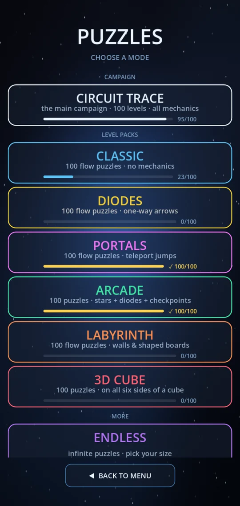
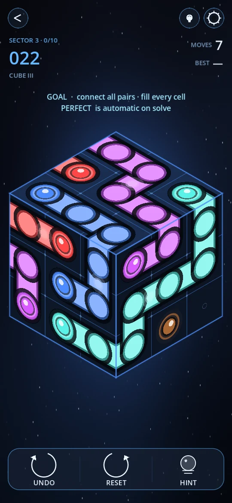
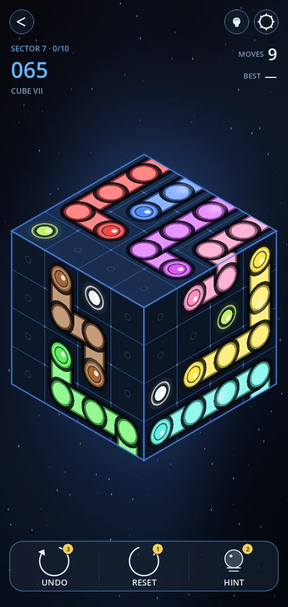

📅 14 November 2026 · ⏱ 6 min read · ✍️ Grounded Studio
Most flow puzzles live on a flat square. You can see the whole board, the edges are where you expect them, and the corners give you an easy place to start. 3D Cube takes that board and folds it around a cube.
It's a free pack of 100 levels in Circuit Trace, and it plays like no other mode in the game. You'll find it under GAME MODES → 3D CUBE.



The rules are the classic connect-the-dots rules. Join every pair of matching dots with a line, never let two lines cross, and fill every cell. What changes is the board: each side of the cube is a small grid, and the six sides are joined at their edges.
Draw a line to the edge of one face and it carries straight on to the next. A dot on the top of the cube can connect to its partner on the side, or all the way round on the back. The way out of one face is often on another.
You only ever see three sides at once, so turning is part of solving:
The first level shows you both with a little hand that does the gesture for you. After that you're on your own.
On a square board, the edges do a lot of the work. A dot in a corner has only two ways to go, and lines along the border are almost never wrong. Those are the first moves most players make.
A cube has no edges and no corners to lean on. Every cell has exactly four neighbours, wherever it is. That means there is no obvious place to start. You have to look for other clues: dots that sit close together, colours with only one sensible route, and the tight spots where three sides of the cube meet.
💡 Turn before you draw. Give the cube a full look round before your first line. A dot on the back is easy to forget, and it often decides which way the colours on the front have to go.
Fewer colours sounds easier, but it's the opposite. With fewer lines, each one has to travel further, and a single colour may wrap around three or four sides of the cube. Every level is built around one intended solution and was rated by the same puzzle solver we use for every pack, so the difficulty climbs steadily from CUBE I to CUBE X.
3D Cube joins the main campaign, Classic, Diodes, Portals, Arcade and Labyrinth. That's 700+ puzzles in total, all free to play. The full rules and how each sector ramps up are on the 3D Cube page.
Get Circuit Trace on Google Play and open GAME MODES → 3D CUBE.
Yes. Circuit Trace has a free 3D Cube mode with 100 flow puzzles on all six sides of a cube. It is part of the free Circuit Trace game on Google Play.
Swipe an empty spot to turn it a quarter turn. You can also drag a line off the edge towards a hidden side, and the cube rolls round with your line.
Yes. A line that reaches the edge of one side carries on to the side next to it, so one colour can wrap around several sides.